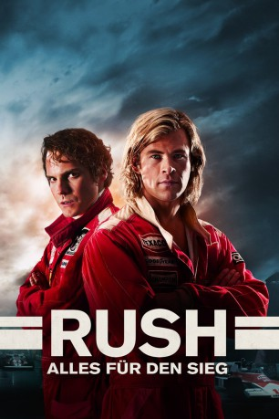
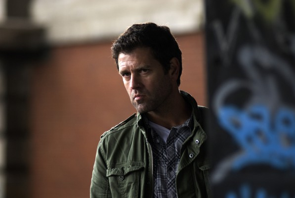
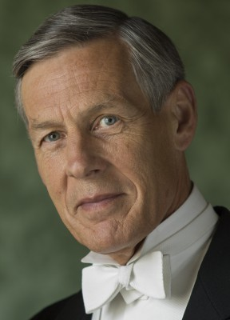

#1085 Rush - Alles für den Sieg
Alternativ: Rush
Auszeichnungen: 1 BAFTA-Awards gewonnen
 
 IMDB-Wertung: 8.1 / 10
IMDB-Wertung: 8.1 / 10  IMDB-TOP-Platzierung: 208
IMDB-TOP-Platzierung: 208  Metascore: 75
Metascore: 75 
Zwei Leben auf der Überholspur: Anfang der 70er Jahre kämpfen die höchst unterschiedlichen Rivalen Niki Lauda und James Hunt um den Aufstieg in den Rennfahrer-Olymp. Während der disziplinierte Lauda ehrgeizig an seiner Karriere feilt, stürzt sich Naturtalent Hunt ins glamouröse Jetset-Leben. Ihre Rivalität tragen sie nicht nur in spektakulären Rennen aus, sondern auch in heftigen Wortgefechten jenseits der Rennbahn. Bis zum legendären Rennen 1976 am Nürburgring, der gefährlichsten aller Rennstrecken, steht Lauda auf dem ersten Tabellenplatz. Doch auf regennasser Fahrbahn baut er einen dramatischen Crash, seine Frau Marlene bangt um sein Leben. Mit schier übermenschlichem Willen kämpft er sich zurück und tritt nur wenige Wochen später zu einem erneuten Showdown mit Hunt in Japan an. Wieder regnet es stark, das Rennen soll abgebrochen werden, doch beide Rivalen liefern sich ein atemberaubendes Duell.
Jahr: 2013
Dauer: 123 Minuten
FSK: 12
Land: England Studio: UFATonspuren: DTS - ,
Untertitel: Deutsch, Englisch,
Auflösung: 1080p (1920x800) Größe: 7270 MB
Genre: Action, Drama, Sport, Biographie
Regisseur:  Ron Howard
Ron Howard
Drehbuch: Peter Morgan
Soundtrack: Hans Zimmer
Darsteller:
 Chris Hemsworth als James Hunt
Chris Hemsworth als James Hunt Daniel Brühl als Niki Lauda
Daniel Brühl als Niki Lauda Olivia Wilde als Suzy Miller
Olivia Wilde als Suzy Miller Alexandra Maria Lara als Marlene Lauda
Alexandra Maria Lara als Marlene Lauda Pierfrancesco Favino als Clay Regazzoni
Pierfrancesco Favino als Clay Regazzoni David Calder als Louis Stanley
David Calder als Louis Stanley Natalie Dormer als Nurse Gemma
Natalie Dormer als Nurse Gemma- Stephen Mangan als Alastair Caldwell
 Christian McKay als Lord Hesketh
Christian McKay als Lord Hesketh Alistair Petrie als Stirling Moss
Alistair Petrie als Stirling Moss Julian Rhind-Tutt als Anthony 'Bubbles' Horsley
Julian Rhind-Tutt als Anthony 'Bubbles' Horsley Colin Stinton als Teddy Mayer
Colin Stinton als Teddy Mayer-  Patrick Baladi als John Hogan
 Tom Wlaschiha als Harald Ertl
Tom Wlaschiha als Harald Ertl- Cristian Solimeno als Arturo Merzario
 James Norton als Guy Edwards
James Norton als Guy Edwards Joséphine de La Baume als Agnes Bonnet
Joséphine de La Baume als Agnes Bonnet- Julien Vialon als Peter Metternich
-  Douglas Reith als Awards Presenter
 Lisa McAllister als BOAC Stewardess
Lisa McAllister als BOAC Stewardess- Hans-Eckart Eckhardt als Lauda's Grandfather
- Vanessa Zachos als Female Hunt Fan
- Xavier Laurent als Test Driver
- Val Jobara als Test Driver
- Zack Niizato als Hasemi
 Akira Koieyama als Takahara
Akira Koieyama als Takahara- Christopher Wolert als German Fan
 Raffaello Degruttola als Giovanni
Raffaello Degruttola als Giovanni- Luca Zizzari als Italian Passenger
- Joe Ferrara als Brazilian Commentator
- Marco Canadea als Italian Race Announcer
- Eiji Mihara als Japanese Announcer
 Demetri Goritsas als American Journalist
Demetri Goritsas als American Journalist Erich Redman als German Journalist
Erich Redman als German Journalist Marcello Walton als Italian Journalist
Marcello Walton als Italian Journalist- Masashi Fujimoto als Japanese Journalist
- Morris Minelli als Ferrari Mechanic
- Christian Stelluti als Ferrari Mechanic
 Lee Asquith-Coe als Fiji Pit Crew , uncredited
Lee Asquith-Coe als Fiji Pit Crew , uncredited- Gordon Bibby als Cheering spectator , uncredited
- Ray Burnet als Max Moseley , uncredited
- Robert Cambrinus als Austrian Registrar , uncredited
- Lee Craven als German C Class , uncredited
 Graham Curry als German Police Officer , uncredited
Graham Curry als German Police Officer , uncredited- Kristofer Dayne als Mario Andretti , uncredited
- Alessandro De Marco als Daniele Audetto , uncredited
- Lukas DiSparrow als Aficionado , uncredited
- Rebecca Ferdinando als Maid of Honour , uncredited
- Joanna Finata als Italian Spectator , uncredited
- Jake Francis als Race Official , uncredited
Datei: X:\2013(N-Z)\Rush - Alles für den Sieg (2013, FSK12, 1920x800).mkv seit 18.05.2015
Festplatte: HD 2013(I-Z)-2014(A-Z)
 Es gibt insgesamt 133 Filme in der Gruppe '2013(N-Z)'
Es gibt insgesamt 133 Filme in der Gruppe '2013(N-Z)'